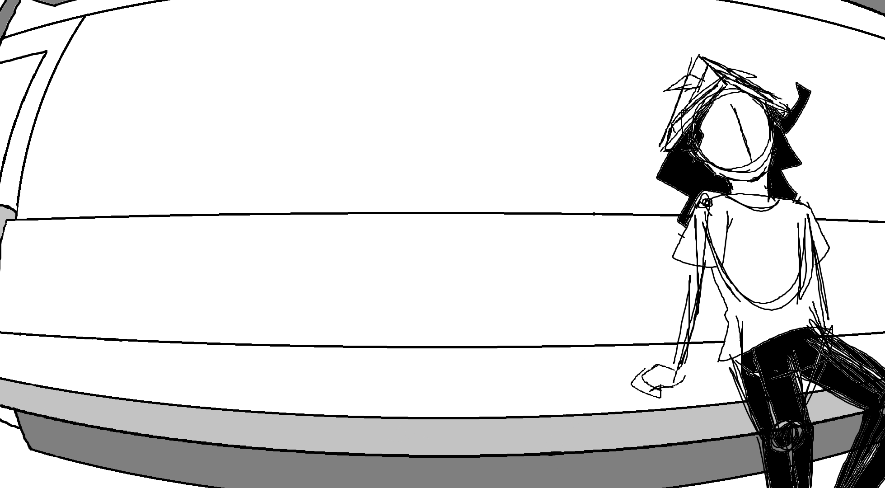
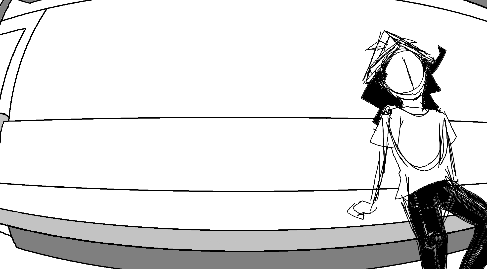

HI, I'M ILLUSIONER!
Welcome aboard the dimensional train! And welcome to V-tor Graphica! My friend QC's been hard at work to make it possible for people to visit this world, which I believe you see as a website? and I'm here to guide you around! Ask me anything!
> What is V-Tor Graphica? How do I get around?> Who are you?
> Who is QC?
> Actually, let me check out the train. (BACK TO HOME)
About V-Tor Graphica
V-Tor Graphica is the name of this world I inhabit! (Or I guess in your case, the name of this website). QC and I have been wanting to show people this world, our creations, and what we think about in our day to day. You can also learn about other characters in this world and other worlds as well! Hope you stick around!
How to operate the train
Use this train to navigate to different webpages! Follow these steps:
- Click on the arrows above the train doors to choose your destination
- Click on the name of your destination on the sign between the arrows
- When the train stops and the doors open, click on the outside space to exit the train!
On the posters around this seat you can find a sitemap if you get lost!
> Cool! Let me ask another question.
> Cool! I'm going to check out the train now. (BACK TO HOME)
About me
As I've said before, my name's Illusioner! I have the power to create anything tactile by combining and splitting apart the shapes that float around in V-Tor Graphica's natural landscape. I can show you sometime! My favorite things to do are to jump into the void, bother QC, and fuck around and find out!
But if I can break the fourth wall real quick, as V-Tor Graphica's creator, Illusioner is my persona. I'm a Comp Sci major and an undergrad student! Here's a list of other things about me:
- Pronouns: I don't really care if you only know me on the internet tbh, make a guess lmao
- Hobbies: Drawing, animating
- Interests (in no particular order): Animation, anime, world-building, science, suits, music, psychology, trains, technology, making things
Really what I am most excited about for this website is to make a blog! I've loved the idea of screaming my thoughts into the void from a personalized space, so that's what I'm going to do!
> Cool! Let me ask another question.
> Cool! I'm going to check out the train now. (BACK TO HOME)
About QC
QC is the only person other than me who originates from V-Tor Graphica! She has the power to make anything by creating vertices and connecting them with edges that spawn from her fingertips, and she can completely delete them from existence as well. That might sound a lot more overpowered than me, but it also takes a lot more time for her to make anything useful. She's much more quiet and chill than I am, and is always engrossed in some project she's working on, but you can probably find her near Station Center if you want to have a brief chat with her.
Unlike me, she doesn't represent any real life people. She's sort of like...an aspect of me, I guess. And things are just a lot more interesting with a companion.
> Cool! Let me ask another question.
> Cool! I'm going to check out the train now. (BACK TO HOME)